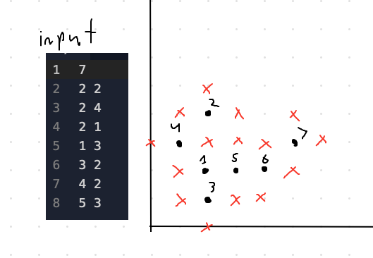
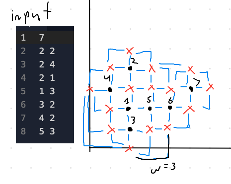

For the visual learners frustrated with the lack of helpful diagrams on USACO solutions. This site is intended to be used as a supplement to the official solutions and will not directly explain how to solve the problems, just provide diagrams that show how the official solution works.
This problem is best represented by a graph. The official solutions says to use a set (to prevent repeats) to store every single coordinate that represents a barn, as well as the 4 adjacent nodes. I have represented that below, with black dots as barns and red Xs as adjacent coordinates, also nodes.
Now, we want to connect these nodes. We will connect 2 nodes if there exists a path between them that changes direction at most once AND does not cross any farms. The distance traveled between those 2 nodes (Manhattan Distance) will be the weight of the edge. This distance will be the shortest distance between any 2 nodes if we only move vertically and horizontally. The edges are drawn below, with a weight shown as an example.

Now, Dijkstra's shortest path algorithm can be run on every single barn to find the shortest path between itself and the next barn. Make sure to avoid visiting any barns in between though.
If the shortest possible path between 2 barns is blocked by anotehr barn, we can use one of the adjacent coordinates of the blocking barn to try to the connect the 2 barns. I have highlighted the direct shortest path between 6 and 7 in green, as well as the indirect path between 2 and 3 in purple to show how the adjacent node to 4 is used to connect 2 and 3. This logic can be applied for even more complex paths as well.
For more specifics, like complexity and code, go to the official solution. This is merely intended to be used as a supplement to make the official solution make more sense.